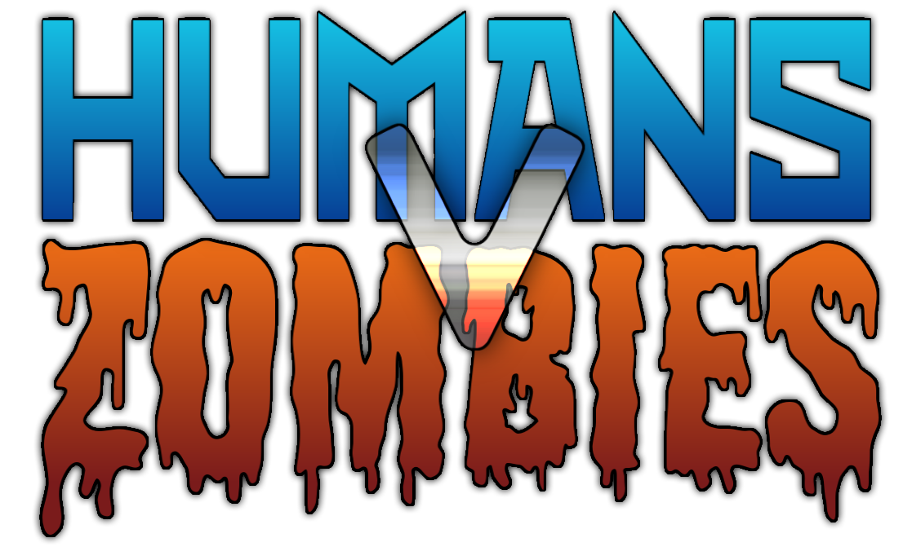
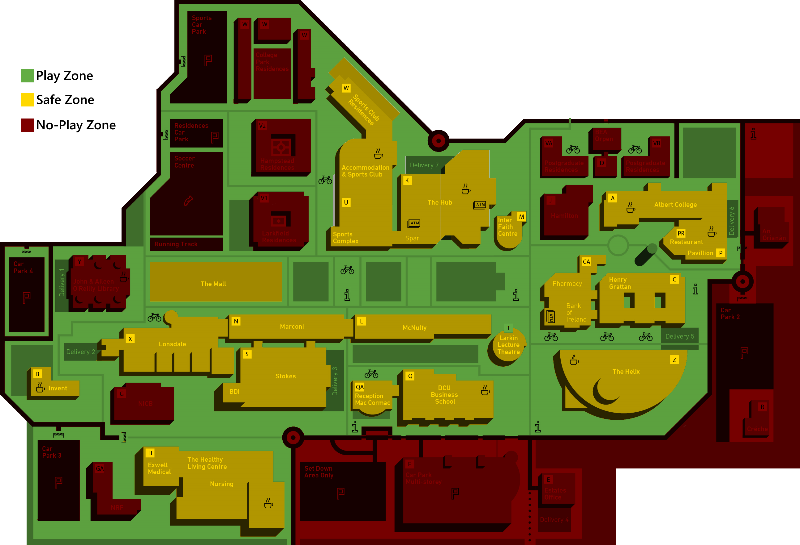

The game will be starting on Monday 23rd of October at midday (12pm).
The game will continue for the rest of the week with special missions throughout.
The game time starts at 8am and ends at 8pm every day. Outside of these times, the game is inactive!
HvZ bands can be collected during Thursday's Raffle or at the stall in The Street (front of the Henry Grattan Building) on Thursday 19th, Friday 20th and Monday 23rd.
Humans will win once all zombies starve if at least 1 survivor remains.
OR
Zombies will win once all human players have been turned into zombies.
A survival guide may be found here.
Human Rules
Humans must wear a clearly visible orange armband at all times within Safe Zones and Play Zones. Masking involvement in the game by not wearing your band or wearing orange clothing can be grounds for removal from the game.
Humans can stun zombies for 15 minutes by tagging them with their weaponry. A tag is defined as a shot Nerf projectile or a thrown balled-up sock. Shooting a zombie's backpack also counts as a stun.
Humans who have been infected by a zombie must give their Kill PIN and name to the zombie. After an hour, a tagged Human joins the Zombies and wears their orange armband around their head.
If you have not been registered as killed an hour after you were caught, please inform the GamesSoc committee who will make necessary arrangements to fix this.
If a human has to leave campus for more than 24 hours or wishes to drop out of the game, please contact the GamesSoc committee to allow for appropriate changes to the player list.
Zombie Rules
Zombies must wear a clearly visible orange headband at all times within Safe Zones and Play Zones. Using hats, hoods, sunglasses worn on the head, or wearing the headband below long hair to mask involvement in the game is not allowed.
Zombies must catch humans at least once every 24 hours, or they will starve and be eliminated from the game. Reporting a kill on the game page feeds a zombie for 24 hours, and a zombie also has the option to split kills with co-operating teammates. Zombies MUST enter a kill PIN into the site as quickly as possible, within an hour at the latest.
An "infection" is a firm touch or grab to any part of a human's body. Grabbing a human's bag does not count as infection.
When hit by a projectile, a Zombie is stunned for 15 minutes and cannot infect humans for that time. A stunned zombie may not shield other zombies from bullets, but they can chase after or run from other humans in order to lead them towards other zombies. Stunned zombies can still communicate with other members of their team.
If a zombie is shot while already stunned, the stun timer is reset to 15 minutes.
Zombies may not steal weapons or ammo from humans, they may not damage ammunition, and they may not use any "shields" to deflect projectiles.
At the start of the game, a number of Original Zombies are chosen to start the game. For the first hour of the game, or until they have killed five players, these zombies do not wear a headband. After these points, they wear a headband as usual.
Zones
In Play Zones, players must wear their bands. Humans may stun zombies and zombies may infect humans freely.
Similarly to Play Zones, in Safe Zones bands must be worn. However, humans cannot be tagged and zombies cannot be stunned. Humans can attack from a Safe Zone to stun zombies outside, and zombies may infect a human inside the Safe Zone provided their two feet are in a Play Zone.
Similarly to Safe Zones, in No-Play Zones, humans cannot be tagged, and zombies cannot be stunned. However, all Nerf weaponry should be concealed and headbands and armbands can be removed. No Play Zones are generally restricted access, privately owned, or would endanger players, and as such should not be entered while actively playing the game. If you are being engaged by a zombie, you must stun them or lose them before entering a No Play Zone unless absolutely necessary. Players who frequently use the No Play Zones in order to evade capture will be removed from the game.

Equipment
Required:
Bandana. This is essential for playing the game. If you have misplaced yours, contact a Gamessoc representative.
One piece of paper with your kill PIN and your name on it. Please write clearly. If you do not have your PIN, it can be checked using the Control Panel feature of the HvZ website.
Allowed:
Dart blasters. You can use any type of weapon that fires a foam projectile (dart, ball, disc) provided they do not cause harm.
Socks. These MUST be thrown. You cannot swing them or use anything to help swing them, and they must not have any heavy or sharp objects inside them.
Misc Rules
No realistic looking weaponry. Weapons must be brightly colored to avoid security issues.
Players are forbidden from entering construction sites on campus.
Players may not use cars or play where there is traffic.
Foam projectiles must be harmless, and not cause any pain. Modified weapons or projectiles are not allowed.
Players must ensure their own personal safety, and under no circumstances put yourself in danger for the purposes of the game.
Non players must not interfere with the game, in ways such as spying for a player. If a non-player offers to help, please refuse.
Keep your student ID on you at all times, don't argue with security if they have an issue with us running around with Nerf guns.
Follow the honour system. Yes, you'll win if you cheat but then nobody's having fun. Play fairly, or not at all.